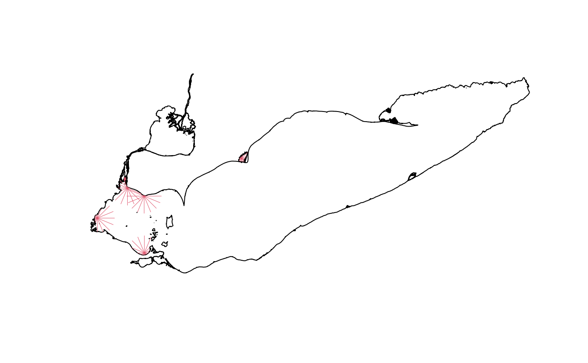

Compute wind fetch and wind weighted fetch
Usage
compute_fetch(
points,
polygon,
max_dist = 15,
n_bearings = 16,
wind_weights = NULL,
crs = NULL
)Arguments
- points
sf
Points representing the locations for which fetch will be calculated.- polygon
sf
Polygon defining land boundaries used to compute fetch distances.- max_dist
numeric
Maximum fetch distance in kilometers. Fetch beyond this distance is capped.- n_bearings
integer
Total number of bearings for fetch calculation (minimal number required is 4, default is 167). Ignored ifwind_weightsis provided.- wind_weights
data.frame
A data frame specifying directional weights for wind exposure. Must contain two columns:direction(numeric, in degrees) andweight(numeric). Note that the weighting applies to all points.- crs
object
Coordinate reference system (CRS) passed tosf::st_crs(), used to transformpointsandpolygon.
Value
A list of two elements:
mean_fetch: asfobject with 3 features:id_point: point identifierfetch_km: mean wind fetch based on all bearings.weighted_fetch_km: mean weighted wind fetch based on all bearings.
transect_lines: asfobject containing all radial transect with the same columns aspointsand the following additional columns:id_point: point identifierdirection: direction (in degree)weight: wind weighttransect_length: transect length in meter computed usingsf::st_length().rank: transect ranks (the lower the rank the higher the length).
Details
Wind fetch is the unobstructed distance over which wind travels across a body of water before reaching a specific point. It plays a crucial role in wave generation, as longer fetch distances allow wind to transfer more energy to the water surface, leading to larger waves.
For all points in points, n_bearings radial transects are generated
by default. If wind_weights is specified, the column direction, which
contains angles in degrees, is used instead to generate the transects. The
transects are then clipped with the polygon using sf::st_intersection(),
and any lines that are not connected to the points are removed. The length of
all clipped transects is computed using sf::st_length() and ranked using
rank(). The resulting spatial object is stored as the transect_lines
element in the returned list and it used to generate the second element:
mean_fetch that included wind fetch averages.
Ensure that max_dist is specified in meters. An error will be thrown if the
spatial projection of points and polygon is not in a meter-based coordinate
system.
References
For an implementation leveraging
sf::st_buffer(), see https://github.com/blasee/windfetch.Croft-White, M.V., Tang, R., Gardner Costa, J., Doka, S.E., and Midwood, J. D. 2022. Modelling submerged aquatic vegetation presence and percent cover to support the development of a freshwater fish habitat management tool. Can. Tech. Rep. Fish. Aquat. Sci. 3497: vi + 30 p.
Examples
# \donttest{
le_bound <- system.file("example", "lake_erie.gpkg", package = "SAVM") |>
sf::st_read()
#> Reading layer `lake_erie' from data source
#> `/home/runner/work/_temp/Library/SAVM/example/lake_erie.gpkg'
#> using driver `GPKG'
#> Simple feature collection with 1 feature and 1 field
#> Geometry type: MULTIPOLYGON
#> Dimension: XYZ
#> Bounding box: xmin: -83.47975 ymin: 41.38081 xmax: -78.85269 ymax: 42.94512
#> z_range: zmin: 0 zmax: 0
#> Geodetic CRS: WGS 84
le_pt <- system.file("example", "le_points.geojson", package = "SAVM") |>
sf::st_read(quiet = TRUE)
res <- compute_fetch(le_pt, le_bound, crs = 32617)
#> ℹ Creating fetch lines
#> ℹ Cropping fetch lines
# use wind-weight
res2 <- compute_fetch(
le_pt, le_bound,
max_dist = 20,
wind_weights = data.frame(
direction = seq(0, 360, by = 360 / 16)[-1],
weight = rep(c(0, 1), each = 8)
),
crs = 32617
)
#> ℹ Using `wind_weights`, ignoring `n_bearings`
#> ℹ Creating fetch lines
#> ℹ Cropping fetch lines
# results
res$mean_fetch
#> Simple feature collection with 6 features and 3 fields
#> Geometry type: POINT
#> Dimension: XY
#> Bounding box: xmin: 299367.8 ymin: 4599578 xmax: 424951.8 ymax: 4682035
#> Projected CRS: WGS 84 / UTM zone 17N
#> id_point fetch_km weighted_fetch_km geometry
#> 1 1 1.342992 1.342992 POINT (323487.6 4664158)
#> 2 2 8.114764 8.114764 POINT (325611.7 4656173)
#> 3 3 9.634700 9.634700 POINT (340150.6 4649137)
#> 4 4 6.819028 6.819028 POINT (340372.5 4599578)
#> 5 5 2.897416 2.897416 POINT (424951.8 4682035)
#> 6 6 8.284419 8.284419 POINT (299367.8 4629965)
res2$mean_fetch
#> Simple feature collection with 6 features and 3 fields
#> Geometry type: POINT
#> Dimension: XY
#> Bounding box: xmin: 299367.8 ymin: 4599578 xmax: 424951.8 ymax: 4682035
#> Projected CRS: WGS 84 / UTM zone 17N
#> id_point fetch_km weighted_fetch_km geometry
#> 1 1 1.342992 0.7984408 POINT (323487.6 4664158)
#> 2 2 9.677264 7.5772252 POINT (325611.7 4656173)
#> 3 3 12.759700 10.0000000 POINT (340150.6 4649137)
#> 4 4 8.069028 1.2275138 POINT (340372.5 4599578)
#> 5 5 2.897416 1.4788449 POINT (424951.8 4682035)
#> 6 6 9.846919 5.9544707 POINT (299367.8 4629965)
# visualizing fetch lines
plot(le_bound |> sf::st_transform(crs = 32617) |> sf::st_geometry())
plot(res$transect_lines |> sf::st_geometry(), add = TRUE, col = 2, lwd = 0.5)

# }